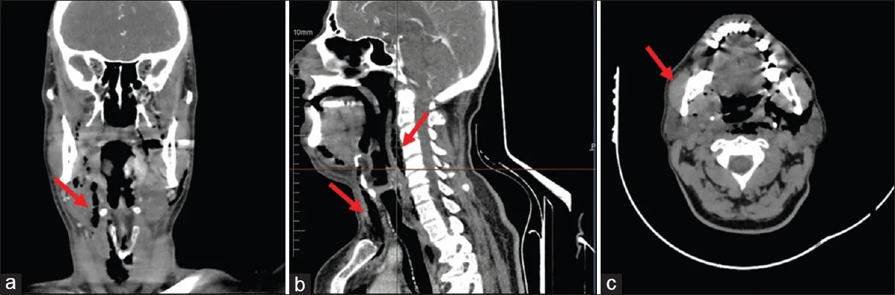
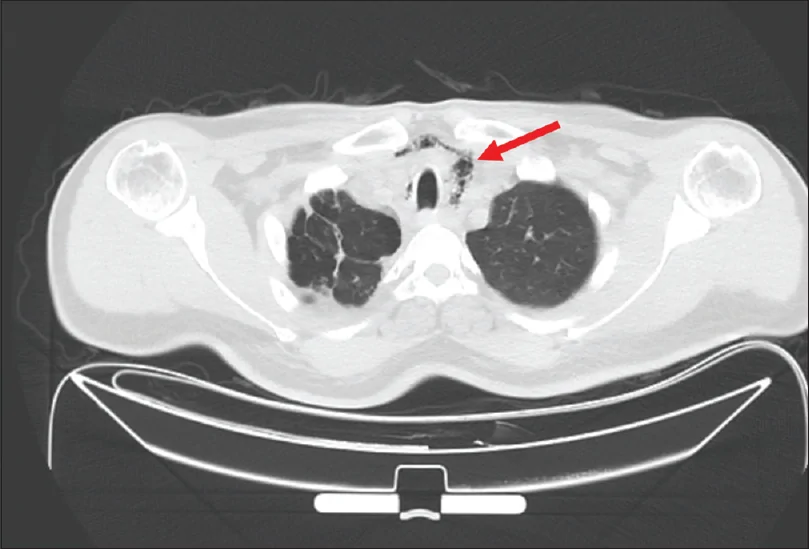
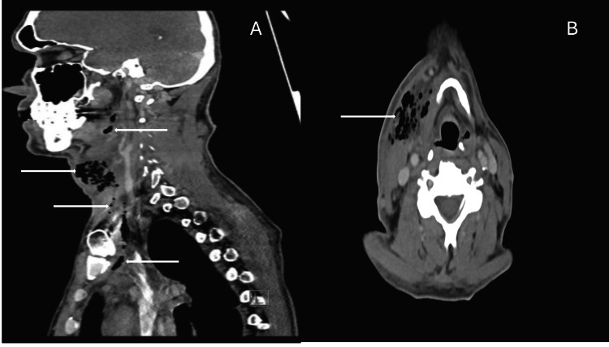

749 — Nhiễm khuẩn răng nguyên phát lan xuống trung thất / Odontogenic infection with descending mediastinal spread
Tags: pattern:nhiem-trung-co pattern:khi-trong-mo-mem pattern:o-dich vung:co-sau vung:trung-that protocol:CT-co-nguc-tiem
Mức chắc chắn (certainty): tổng hợp y văn (literature synthesis) — số liệu từ đoàn hệ 997 ca nhiễm khuẩn răng nhập viện có mổ (BMC Oral Health 2025, PMC12817696, CC BY 4.0), 496 ca nhiễm trùng cổ sâu (Turk J Thorac Cardiovasc Surg 2026, PMC13658977, CC BY-NC 4.0), tổng quan 18 nghiên cứu / 881 ca viêm trung thất hoại tử xuống (PMC13476192, CC BY-NC 4.0) và 2 ca nguyên văn có ảnh (PMC13722338, PMC12357488). Nhóm không có bệnh nhân của mình.
Câu chốt: nhiễm khuẩn răng là nguyên nhân hàng đầu của nhiễm trùng cổ sâu nặng, và đường lan chết người là khoang sau hầu → danger space → trung thất sau. Ba số phải thuộc: khoang dưới hàm 50,7%, lan nhiều khoang 6,3% nhưng làm tăng biến chứng gấp 5,5 lần (aOR 5,49), và áp-xe sau hầu chỉ 2,8% ca cổ sâu nhưng là nguồn của 44,4% ca viêm trung thất hoại tử. Khí trong mô mềm là dấu hiệu báo động, nhưng không có khí không loại trừ.
1. Tổng quan bệnh học – cơ chế hình ảnh
1.1 Từ sâu răng đến trung thất — giải phẫu quyết định tất cả
- Ổ nguyên phát: tủy răng hoại tử → viêm quanh chân răng → thủng vỏ xương hàm. Răng hàm dưới có chân nằm dưới đường mylohyoid → mủ vào khoang dưới hàm (submandibular); răng hàm trên và răng cửa → khoang má (buccal) và hố nanh (canine fossa). Đây là lý do khoang dưới hàm chiếm 50,7%, khoang má 18,6%, hố nanh 12,0% trong 997 ca.
- Vì sao mủ xuống được trung thất: khoang sau hầu (retropharyngeal) và danger space là hành lang trở lực thấp chạy từ nền sọ đến cơ hoành, không có vách chắn ngang. Khi áp lực trong khoang tăng (nuốt, thở), mủ và khí bị đẩy xuống theo trọng lực và chênh áp; danger space nằm sau lá alar, trước đốt sống nên dẫn thẳng vào trung thất sau, trong khi khoang cạnh hầu/tĩnh mạch cảnh dẫn vào trung thất trên.
- Vì sao thấy khí trên CT: vi khuẩn kỵ khí sinh hơi (Prevotella, Fusobacterium, Peptostreptococcus) và mô hoại tử sinh khí. Trên CT, khí có đậm độ khoảng −1000 HU, dịch 0–20 HU, mỡ −50 đến −100 HU; khí trong khoang sâu là dấu hiệu của nhiễm khuẩn kỵ khí/hoại tử, không phải "khí từ phổi".
- Sinh bệnh học của sốc: mủ trong khoang kín làm tăng áp lực → chèn ép đường thở (khò khè, lệch khí quản) và huyết khối tĩnh mạch cảnh; vi khuẩn vào máu gây nhiễm khuẩn huyết. Vì vậy đường thở luôn được xử lý trước khi chụp CT ở bệnh nhân khó thở.
1.2 Dịch tễ và các con số quyết định xử trí
- 997 ca mổ vì nhiễm khuẩn răng (PMC12817696): 50,7% khoang dưới hàm, 18,6% khoang má, 12,0% hố nanh; 6,3% lan ≥ 2 khoang; biến chứng toàn thân 3,8% (28/38 ca biến chứng phải ICU, 2 ca tử vong = 0,2%); nằm viện kéo dài ≥ 10 ngày 6,7%; thời gian nằm trung bình 6,0 ± 3,8 ngày.
- Yếu tố nguy cơ độc lập cho biến chứng (aOR): tuổi 1,04/năm; COPD 3,71; nghiện rượu mạn 5,63; lan nhiều khoang 5,49. Lan nhiều khoang cũng là yếu tố dự báo nằm viện kéo dài: aOR 8,38.
- 496 ca nhiễm trùng cổ sâu (PMC13658977): viêm trung thất hoại tử xuống (DNM) 1,81% (9/496); áp-xe sau hầu chỉ 2,8% ca cổ sâu nhưng là nguồn của 44,4% ca DNM; 66,7% ca DNM có tổn thương khoang sau hầu; tất cả 9 ca sống sau dẫn lưu ngoại khoa tích cực.
- Tử vong của DNM: 11–40% trong các loạt hiện đại (PMC13476192); tới 40% nếu chẩn đoán và điều trị muộn (PMC13722338); 60–70% DNM khởi nguồn từ răng hoặc vùng hàm mặt.
- Viêm cân mạc hoại tử cổ (CNF): khoảng 2,6% các nhiễm khuẩn mô mềm, tử vong 7–20%; 30–50% có nguồn răng (PMC12357488).
2. Mẫu hình + chẩn đoán phân biệt theo vị trí (Gamut)
- Trên đường mylohyoid (khoang dưới lưỡi): áp-xe dưới lưỡi, Ludwig angina — viêm hai bên khoang dưới hàm + dưới lưỡi + dưới cằm, sàn miệng nâng cao, lưỡi bị đẩy ra sau → đường thở là ưu tiên số 1.
- Dưới đường mylohyoid (khoang dưới hàm, má, cơ nhai, cạnh hầu): áp-xe dưới hàm (hay gặp nhất), áp-xe cơ nhai (trismus nổi bật), áp-xe cạnh hầu (đau nuốt, lệch thành họng).
- Khoang sau hầu/danger space: áp-xe sau hầu — nguy cơ DNM cao nhất; khí lan dọc trước đốt sống xuống trung thất sau.
- Trung thất: viêm trung thất hoại tử xuống (DNM) — khí/dịch trong trung thất, tràn dịch/tràn khí màng phổi, nhiễm khuẩn huyết.
- Biến chứng mạch máu: Lemierre (huyết khối tĩnh mạch cảnh trong + thuyên tắc phổi nhiễm khuẩn), giả phình cảnh, chảy máu cảnh.
- Mnemonic vị trí "4 tầng": Dưới lưỡi/dưới hàm (Ludwig) → Cơ nhai/cạnh hầu (trismus) → Sau hầu/danger (đường xuống) → Mediastinum (DNM). Đi từng tầng để không bỏ sót.
3. Bảng so sánh phân biệt (ma trận đối chiếu)
| Thực thể (entity) | Hình ảnh điển hình | Chốt vào (rule-in) | Chốt loại (rule-out) | Gợi ý xác nhận |
|---|---|---|---|---|
| Áp-xe răng đơn khoang | Ổ dịch một khoang, viền ngấm, ổ răng/sâu răng cùng bên | Ổ dịch + viền ngấm + sâu răng/răng đau | Lan ≥ 2 khoang, khí dọc cổ → đã nặng hơn | CT có cản quang; chụp răng |
| Ludwig angina | Hai bên dưới hàm + dưới lưỡi + dưới cằm, sàn miệng nâng, không ổ dịch rõ | Sưng hai bên + lưỡi bị đẩy sau + khó nuốt/khó thở | Ổ dịch khu trú một bên → áp-xe đơn thuần | CT cổ; đánh giá đường thở trước |
| Áp-xe sau hầu/DNM | Ổ dịch + khí sau hầu, lan trước đốt sống → trung thất sau | Khí dọc danger space + khí/dịch trung thất | Không lan dưới eo giáp, không khí → áp-xe khu trú | CT cổ - ngực cản quang; Endo |
| Viêm cân mạc hoại tử cổ | Khí lan rộng trong mô mềm, dày cân nông, không ổ dịch rõ, da tím/bóng nước | Khí lan ngoài khoang + đau không tương xứng + nhiễm khuẩn huyết | Ổ dịch có viền rõ, không khí → áp-xe | Mổ thăm dò + cấy; không chờ hình ảnh |
| Lemierre | Tĩnh mạch cảnh trong huyết khối + áp-xe cạnh hầu + nốt/thuyên tắc phổi | Huyết khối IJV + di căn phổi nhiễm khuẩn | Không huyết khối IJV → áp-xe đơn thuần | CT tĩnh mạch cổ; cấy máu kỵ khí |
| U/viêm xương hàm | Khối đặc, phá xương, không khí; có thể nhầm áp-xe | Phá xương + khối đặc + không ổ dịch | Ổ dịch + khí + sốt cấp → nhiễm trùng | CT xương hàm, sinh thiết nếu nghi u |

(a) Coronal: nhiều ổ khí trong mô mềm cổ; (b) Sagittal: khí chạy dọc cân cổ sâu xuống dưới; (c) Axial: ổ nhiễm nguyên phát cạnh răng khôn hàm dưới phải mọc lệch. Nguồn: Fettahoglu ST và cs, Turk J Emerg Med 2026, Fig. 1, CC BY-NC-SA 4.0.4. Protocol chụp + phân độ và xử trí
4.1 CT cổ - ngực có cản quang là chuẩn
- Chỉ định: sưng cổ + sốt + đau nuốt/trismus, nghi áp-xe hoặc lan trung thất; bệnh nhân không đáp ứng kháng sinh sau 48–72 giờ.
- Kỹ thuật: CT cổ + ngực có cản quang, lát 1–2 mm, cửa sổ mô mềm và xương; luôn chụp tới trung thất nếu có khí cổ hoặc triệu chứng ngực — chụp cổ đơn thuần sẽ bỏ sót DNM.
- Báo cáo 6 mục: (1) ổ răng nguyên phát (răng nào, sâu/viêm quanh chân); (2) khoang nào bị ổ dịch; (3) khí trong mô mềm/trung thất; (4) đường thở (hẹp/lệch khí quản, phù thanh môn); (5) mạch máu (huyết khối IJV, giả phình cảnh); (6) mức lan trung thất theo Endo.
- Endo (1999), dẫn qua PMC13476192: I — khu trú trung thất trên (trên carina); IIA — xuống trung thất trước dưới; IIB — xuống trung thất sau dưới; III — toàn bộ trung thất. Endo IIB và Guan III có gánh nặng mổ và tử vong cao nhất (Guan III > 30%).
4.2 Xử trí — không có "kháng sinh đơn thuần" cho ổ dịch
flowchart TD
A[Sưng cổ + sốt + đau nuốt/trismus] --> B{Khó thở, khò khè, lệch khí quản?}
B -->|Có| C[Bảo vệ đường thở trước: đặt nội khí quản/mở khí quản]
B -->|Không| D[CT cổ + ngực có cản quang, lát 1–2 mm]
C --> D
D --> E{Ổ dịch/khí + lan khoang?}
E -->|Không| F[Kháng sinh + theo dõi 24–48 giờ; chụp lại nếu xấu]
E -->|Có, khu trú| G[Dẫn lưu ổ dịch + nhổ răng nguyên phát + kháng sinh]
E -->|Khí dọc cổ hoặc trung thất| H[Dẫn lưu cổ + lồng ngực, cấy kỵ khí, ICU]
H --> I[Chụp lại theo diễn biến; dẫn lưu lại nếu còn ổ dịch]
- Kháng sinh theo kinh nghiệm: ampicillin/sulbactam hoặc amoxicillin/clavulanate (phổ liên cầu miệng + kỵ khí); dị ứng penicillin → clindamycin; điều chỉnh theo cấy. Không có ngưỡng kích thước tuyệt đối để mổ — chỉ định dựa vào ổ dịch, chèn ép đường thở, nhiễm khuẩn huyết hoặc không đáp ứng nội khoa.
- Loại bỏ ổ răng trong cùng lần mổ khi có thể; nếu chưa thể, đánh dấu và xử lý sớm sau khi kiểm soát nhiễm trùng.
- DNM: dẫn lưu cổ + trung thất (transcervical và/hoặc transthoracic, ưu tiên VATS), mổ lại > 50% ca nặng; ICU, nuôi dưỡng, kiểm soát đau.
5. Biến thể bình thường và cạm bẫy
- Không thấy khí không loại trừ nhiễm khuẩn kỵ khí: khí xuất hiện muộn và không có ở mọi ca; ổ dịch + viền ngấm + sốt đã đủ chỉ định dẫn lưu.
- Chụp cổ mà quên ngực: bỏ sót DNM — bệnh nhân chỉ ho/khó thở nhẹ nhưng đã có khí trung thất. Luôn chụp tới carina khi có khí cổ.
- Nhầm khí trung thất do nguyên nhân khác: tràn khí màng phổi, vỡ thực quản, thủ thuật nha khoa dùng khí nén. Hỏi kỹ tiền sử can thiệp răng; khí đơn thuần không kèm ổ dịch/dày cân có thể do barotrauma.
- Bỏ sót "răng khôn mọc lệch" ở góc hàm: ổ nhiễm có thể nằm ngoài lát cắt thường quy; phải cuộn hết xương hàm dưới.
- Trismus làm khám hạn chế: không há miệng được không có nghĩa là nhẹ — trismus + sưng dưới hàm là áp-xe cơ nhai/cạnh hầu cho tới khi chứng minh khác.
- Sai lầm "chỉ cần kháng sinh vì đã có kháng sinh mạnh": ổ mủ kín không có nồng độ kháng sinh hiệu quả; dẫn lưu là điều trị, kháng sinh là hỗ trợ.
6. Tự lượng giá — Blind Quiz
Ca 1 — Nam 52 tuổi, sốt, sưng cổ bên phải, hạn chế há miệng, không chấn thương, không can thiệp răng trước đó. Nhìn CT cổ, mô tả trước.
- Hỏi: Tổn thương nằm ở khoang nào? Dấu hiệu nào cho biết mức độ nặng? Nguyên phát từ đâu?
Bấm để hiện đáp án (findings + chẩn đoán)
- Dấu hiệu: (a) nhiều ổ khí trong mô mềm cổ bên phải; (b) khí chạy dọc cân cổ sâu xuống dưới; (c) ổ nhiễm cạnh răng khôn hàm dưới phải mọc lệch.
- Chẩn đoán: áp-xe răng lan khoang cổ sâu, có khí — nghĩ nhiễm khuẩn kỵ khí/hoại tử; nguy cơ DNM.
- Việc cần làm: bảo vệ đường thở nếu khó thở; CT cổ + ngực; dẫn lưu + nhổ răng + kháng sinh phổ kỵ khí; cấy kỵ khí.
- Nguồn ảnh: Fettahoglu ST và cs, Turk J Emerg Med 2026, Fig. 1, CC BY-NC-SA 4.0 (PMC13722338).
Ca 2 — Cùng bệnh nhân, CT ngực được chụp thêm. Đọc trước khi mở đáp án.

- Hỏi: Dấu hiệu chính? Đây là biến chứng gì? Vì sao phải mổ cả cổ và ngực?
Bấm để hiện đáp án (findings + chẩn đoán)
- Dấu hiệu: khí tự do trong trung thất trước và giữa (mũi tên), khí dưới da; tiếp nối từ khoang cổ.
- Chẩn đoán: viêm trung thất hoại tử xuống (DNM) — trong ca gốc được xếp Endo IIA.
- Vì sao mổ cả hai: dẫn lưu cổ đơn thuần không kiểm soát được ổ trung thất; cần dẫn lưu lồng ngực (VATS/mở) + kháng sinh + ICU.
- Nguồn ảnh: Fettahoglu ST và cs, Turk J Emerg Med 2026, Fig. 2, CC BY-NC-SA 4.0 (PMC13722338).
Ca 3 — Nam 61 tuổi, viêm khớp dạng thấp đang dùng etanercept, tiền sử tiêm chích. Nhập viện vì nấc cụt không cắt cơn, chóng mặt; ban đầu bị chẩn đoán "hội chứng virus". Sau đó sưng cổ và sốc nhiễm khuẩn.

- Hỏi: Vì sao chẩn đoán ban đầu sai? Dấu hiệu CT nào phân biệt viêm cân mạc hoại tử với áp-xe thường?
Bấm để hiện đáp án (findings + chẩn đoán)
- Dấu hiệu: (A) Sagittal — khí lan rộng trong khoang cạnh hầu, dưới hàm, tạng, xuống trung thất trên; (B) Axial — khí trong nhiều khoang cổ, dày cân, không thấy ổ dịch có viền rõ.
- Chẩn đoán: viêm cân mạc hoại tử cổ (CNF) + DNM; cấy polymicrobial (Streptococcus constellatus, Parvimonas, Cutibacterium, Actinomyces turicensis) gợi nguồn răng.
- Vì sao sai ban đầu: nấc cụt và triệu chứng mơ hồ; ở người ức chế miễn dịch (etanercept), phản ứng viêm bị che lấp, không có sốt cao/sưng rõ lúc đầu.
- Chốt loại: khí lan ngoài khoang + không ổ dịch khu trú + đau không tương xứng → CNF, cần mổ thăm dò cấp cứu, không chờ hình ảnh "điển hình".
- Nguồn ảnh: Lorenzo E và cs, Cureus 2025, Fig. 1, CC BY 4.0 (PMC12357488).
Bài liên quan chéo
- 730 – Nhiễm trùng cổ sâu: áp-xe sau hầu, danger space & phù giả
- 747 – Chấn thương răng và ổ răng ở trẻ
- 090 – Bỏng hít đường thở (đường thở cấp cứu)
- 700 – Tổng quan Đầu Cổ
- 093 – Hội chứng tĩnh mạch chủ trên (khi có chèn ép trung thất)
Không dùng để chẩn đoán độc lập khi chưa có người hướng dẫn.